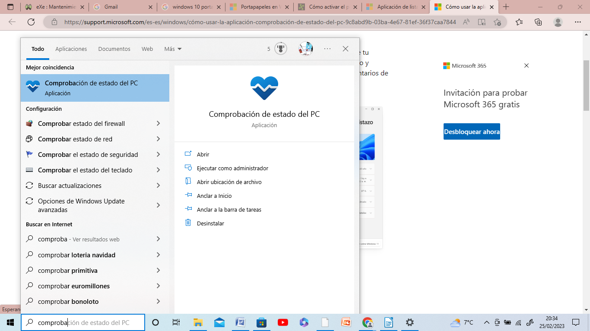
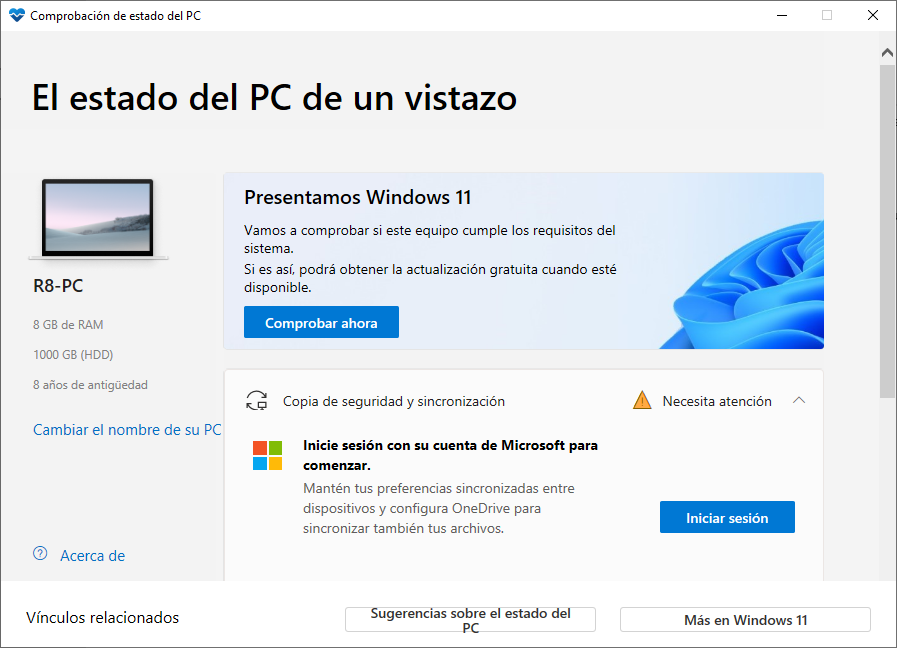

- Reinicia el equipo periódicamente.
- Instala actualizaciones desde Windows Update.
- Desfragmenta las unidades de almacenamiento si es necesario. Esta acción sirve para optimizar tus unidades y ayudar a que tu PC funcione más suavemente y se inicie más rápido. Lo que hace el Desfragmentador de disco de Windows es reorganizar los datos fragmentados para que los discos y las unidades puedan funcionar de forma más eficaz. Para desfragmentar el disco duro:
-
Escribe "Desfragmentar" en el cuadro Buscar y en la lista de resultados, haz clic en Desfragmentar y optimizar unidades.
Selecciona el disco que desees desfragmentar. Haz clic en Analizar para ver si es necesario desfragmentarlo. Puede que te pida una contraseña de administrador o una confirmación, escribe la contraseña o proporciona la confirmación.Cuando finalice el proceso de análisis, comprueba el porcentaje de fragmentación en el disco. Si es superior al 10 %, deberías desfragmentar el disco.
El desfragmentador de disco puede tardar de varios minutos a unas pocas horas en finalizar, dependiendo del tamaño y el grado de fragmentación del disco duro, pero puedes usar el equipo durante el proceso de desfragmentación.
-
- Optimiza el arranque de tu equipo. Presiona las teclas Windows + R y escribe el comando msconfig. En la pestaña Arranque, selecciona la opción llamada Sin arranque del GUI, para omitir el logotipo de Windows al iniciar sesión. Haz clic en Aceptar para guardar los cambios.
-
Comprueba y repara errores en el disco. Abre el Explorador de archivos. Luego, haz clic en Este equipo; ubicado en el panel izquierdo de la ventana. Después, haz clic derecho en la unidad principal "C:" y selecciona Propiedades. En la pestaña Herramientas, haz clic en el botón Comprobar. Selecciona Examinar unidad y el proceso de examen comenzará. Cuando el proceso termine, clic en la opción llamada Mostrar detalles, para abrir el Visor de eventos y visualizar los errores que pueda contener la unidad de disco. Abre la pestaña Detalles ubicada en la parte inferior, para leer el informe completo.
-
Borra la carpeta temporal: Presiona las teclas de Windows + R, escribe el comando %temp% y haz clic en Aceptar. Selecciona todo el contenido de la carpeta presionando las teclas Ctrl + E. Para borrar definitivamente los elementos seleccionados presiona las teclas Mayúsc + Supr. Luego, podrás ver un cuadro de diálogo de confirmación. Para continuar, haz clic en el botón Sí.
-
Liberar espacio en el disco con opciones avanzadas. Escribe en el cuadro de búsqueda la palabra "espacio" y haz clic en la opción llamada Liberador de espacio en disco. Selecciona la unidad que quieras. Después, cuando veas en la ventana: Liberador de espacio para (Unidad seleccionada), haz clic en el botón llamado Limpiar archivos del sistema. Después de realizar la limpieza, se volverá a cargar el programa. En la sección llamada: Archivos que se pueden eliminar, selecciona las casillas que quieras liberar espacio y haz clic en Aceptar, para continuar el proceso. Debes tener mucho cuidado con lo que seleccionas, porque desde allí puedes borrar puntos de restauración o copias de seguridad para restaurar al sistema operativo anterior (si actualizaste desde Windows 7 o Windows 8.1 desde el Windows Update). Lo que puedes borrar sin problemas es lo siguiente:
• Archivos de programa descargados.
• Archivos temporales de Internet.
• Páginas web sin conexión.
• Archivos de volcado de memoria de errores del sistema.
• Archivos de informe de errores de Windows.
• Archivos de Optimización de entrega.
• Papelera de reciclaje.
• RetailDemo Offline Content.
• Archivos temporales.
• Miniaturas.
La aplicación Comprobación de estado del PC te ofrece información actualizada sobre el estado de tu dispositivo Windows. Esto te permitirá tomar medidas que mejoren el rendimiento de tu dispositivo y solucionen problemas. Para abrir dicha aplicación escribe "Comprobación de estado del PC" en el cuadro de búsqueda de la barra de tareas y selecciónalo en la lista de resultados.
Si no tienes instalada la Comprobación de estado del PC, puedes instalarla yendo a https://aka.ms/GetPCHealthCheckApp y siguiendo las indicaciones para descargar e instalar la aplicación.

